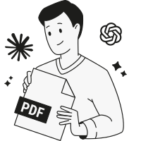
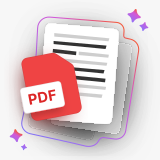

Edit your PDFs right inside Claude and ChatGPT
Automate your PDF tasks and save time with pdf.net MCP. Edit, merge, annotate PDFs, organize your files and more — without switching tools.
Trusted by 2M+ customers
From prompt to done
Connect pdf.net
Find it in the Claude or ChatGPT apps store. Takes a minute.
Ask it to edit or build
Describe it in plain words and get a finished document back — without leaving the chatTake the result
Download the file, share a link, or use it in the next task
What people actually ask their AI chat to do


Ready to put it to work?
Connect pdf.net in seconds and try it on your own tasks
Countless tasks, one simple prompt each
Translate, keep the layout
“Make two copies of this contract — translate one into Spanish and the other into French, keeping the formatting”Split into several docs
“Please split this document into three separate ones: a commercial proposal, a presentation, and an invoice.”Collect info across docs
“Check all contracts in the folder and highlight which contracts are ending next month”Create doc draft
“Please prepare a template for new employee questionnaires based on the old document”Compare files
“Check the new version of the contract and compare it with the previous one. Show changes and highlight high-risk wording.”Compress
“Add photos of our object to this file and compress the file with minimal loss of image quality.”Edit multiple files
“Update the date on invoices and change our company address to the new one”Bates numbering
“Bates-stamp all the files in this folder with prefix ABC, starting at 0001”
Your documents are safe
- Files stay in your pdf.net account — nothing's copied out
- pdf.net only opens the files you point it at — nothing else.
- Same encryption and access controls as the rest of pdf.net

Connect in under a minute
Pick your assistant, add the pdf.net server, and start prompting.
Claude
Add official pdf.net connector for ClaudeConnectChatGPT
Connect with official pdf.net app from the ChatGPT apps storeConnect
Need more details? Read MCP docs
Set it in action
Watch one prompt turn a blank template into five finished invoices — generated, edited, and packed for email, all without leaving the chat
People all over the world trust pdf.net to edit their docs
The fact that it is online and can be accessed via any device is a real plus. Also it has all the tools I need to manage pdfs


Richard B.G2 review
The fact that it is online and can be accessed via any device is a real plus. Also it has all the tools I need to manage pdfs
Richard B.G2 review
I can handle contracts, invoices, and client documents without paying for expensive software or hiring someone to do it. The browser-based setup means I can work from the office, home, or even my phone when I'm meeting with clients. Processing is quick enough that I'm not wasting time, and the tools I use regularly (merging proposals, compressing files, converting documents) work consistently.

Anna Y.G2 review
It does the task for the available features of this platform very efficiently. Editing and organizing of pdf files can be done easy and fast on this platform.

Konjengbam Mitindra SinghG2 review
The interface is clean, user-friendly, and makes it incredibly easy to add text, signatures, checkboxes, and other information without any hassle.

Mark PepitoTrustpilot review
Frequently asked questions
- What is MCP?
- Model Context Protocol is an open standard that lets AI assistants connect to outside tools. Anthropic introduced it in November 2024. Claude and ChatGPT both support it.
- What is an MCP server?
- An MCP server is the bridge between an AI assistant and a specific tool. The pdf.net MCP server lets your assistant work with documents: read, edit, generate, translate, and organize.
- Is the pdf.net MCP server free?
- Yes, the pdf.net MCP server is free to use today. Connect it to your pdf.net account and start prompting.
- How do I connect pdf.net to my AI assistant?
- Open your assistant's settings, add the pdf.net MCP server, and sign in with your pdf.net account. It works with Claude, ChatGPT, and other MCP clients.
- How do I connect pdf.net to ChatGPT?
- Add the pdf.net MCP server in ChatGPT, then sign in with your pdf.net account. From then on you can upload a PDF to ChatGPT and let it edit, convert, or organize the file for you.
- Does it work with Claude Code?
- Yes, the pdf.net MCP works with Claude Code. Set it up once and your assistant can handle PDFs right from the command line.
- What can I do through pdf.net MCP?
- Edit, merge, split, compress, convert, translate, generate documents, and organize files through pdf.net MCP. Anything our tool does, your AI assistant can do for you.
- Can AI pull data from a PDF?
- Yes, you can pull data from a PDF. Ask your assistant for the totals in an invoice, the dates in a contract, or every line item in a report. pdf.net reads the file. Your assistant returns the numbers.
- Can MCP read a PDF?
- Yes, it is possible through the pdf.net MCP server. Your AI assistant opens the file, reads the contents, and answers questions or extracts what you ask for.
- Is my data safe?
- Yes, because files stay in your pdf.net account. Your assistant only accesses files you ask it to touch. You get the same encryption and access controls as the rest of pdf.net.
- Do I need to know how to code?
- No. If you can write a prompt, you can use it.